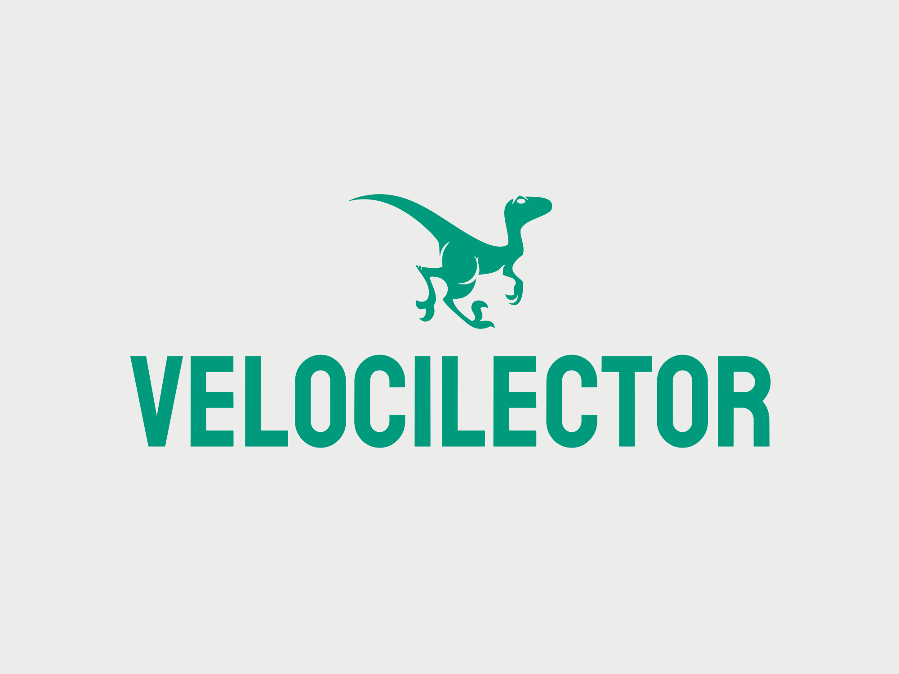

Presiona 1 o 2 para elegir modo
Modo 1:
Presiona espacio para cambiar de palabra.
Modo 2:
Las palabras se muestran automáticamente cada 5 segundos,
y el tiempo se reduce un 5% cada 20 palabras.
Palabras: 0
Presiona "Esc" para salir del juego.